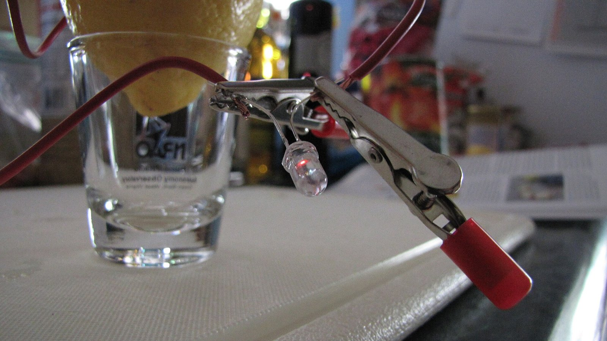
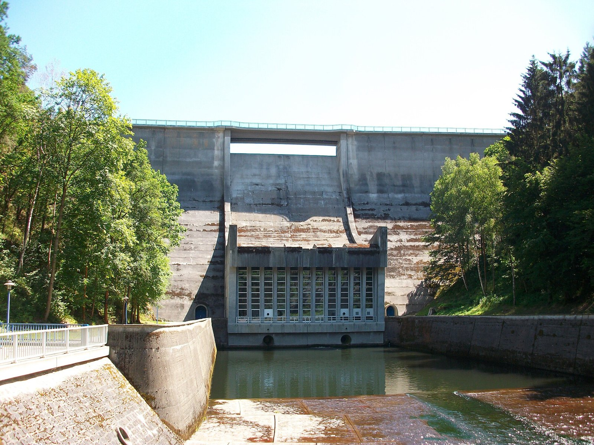
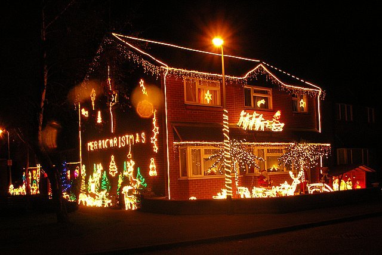

Vor der ersten Lampe misst du 0,3 A. Gib die Stromstärke hinter der zweiten Lampe an.
verzweigt
Zwei Zweige: 0,4 A und 0,25 A. Berechne die Stromstärke in der Hauptleitung.
Gesetz nennen
Nenne das Gesetz der Stromstärke für den verzweigten Stromkreis als Gleichung.
Einstieg · Vergleich
Die elektrische Spannung
Vergleiche
1)0,3 A — überall gleich.
2) 0,4 A + 0,25 A = 0,65 A
3)Iges = I1 + I2
Problemstellung
Die elektrische Spannung
Strom aus Zitronen?

In den Zitronen stecken Streifen aus verschiedenen Metallen, verbunden mit Drähten.
Am Ende leuchtet eine kleine LED.
Woher kommt hier der Antrieb für den Strom – und reicht eine einzige Zitrone?
Foto: Travis V from Mount Vernon · CC BY 2.0 · Wikimedia Commons
Diskussion
Die elektrische Spannung
Frage der Stunde — was meint ihr?
Kann man aus einer Zitrone, einem Kupfer- und einem Zinkblech eine Batterie bauen?
Überlegt zu zweit: Was vermutet ihr — und warum?
Schreib deine Vermutung ins Heft.
⏱ 3 min — zu zweit, dann in der Klasse
Erarbeitung · Bild
Die elektrische Spannung
Die Staumauer der Talsperre Pöhl

Blick von unten auf die Staumauer der Talsperre Pöhl (Vogtland); dahinter liegt der Stausee.
Hinter der Mauer steht das Wasser viel höher als davor. Was passiert, wenn man unten ein Loch öffnet – und wovon hängt ab, wie stark das Wasser herausschießt?
Auflösung
Das Wasser strömt von oben nach unten und kann eine Turbine antreiben. Je größer der Höhenunterschied, desto stärker der Antrieb. Beim Strom ist die Spannung dieser Antrieb – wie der Höhenunterschied beim Wasser.
Foto: Aagnverglaser · CC BY-SA 4.0 · Wikimedia Commons
Erarbeitung · Demo
Die elektrische Spannung
Wir schauen zu: die Zitronenbatterie
Material: Zitronen oder Äpfel, Bleche aus Kupfer, Zink und Eisen, Vielfachmessgerät, 2 Kabel mit Krokodilklemmen
Welche Spannung liefert eine Zitrone mit zwei Metallblechen — und wovon hängt sie ab?
Beobachtet genau, was passiert.
Beschreibt es danach in einem Satz.
Erarbeitung
Die elektrische Spannung
Spannung als Antrieb
Ein Wasserkreislauf braucht eine Pumpe, die das Wasser antreibt.
Ein Stromkreis braucht eine Quelle, die die Elektronen antreibt.
Wie stark sie antreibt, gibt die Spannung an.
Gemessen wird mit dem Spannungsmesser — er wird parallel zum Gerät geschaltet.
Erarbeitung
Die elektrische Spannung
Spannungsquellen
Batterie und Akku: aus chemischen Stoffen
Solarzelle: aus Licht
Generator und Dynamo: aus Bewegung
Netzgerät und Steckdose: aus dem Kraftwerk
Erarbeitung · Tafelbild
Die elektrische Spannung
Die elektrische Spannung
Stundenfrage: Kann man aus einer Zitrone, einem Kupfer- und einem Zinkblech eine Batterie bauen?
Spannung als Antrieb
Die neue Größe
Spannungsquellen
Die Zitronenbatterie
Erarbeitung · Tafelbild
Die elektrische Spannung
Spannung als Antrieb
mündlich
Wasserkreislauf: Die Pumpe treibt das Wasser an.
Stromkreis: Die Quelle treibt die Elektronen an.
Wie stark sie antreibt, gibt die Spannung an.
Der Spannungsmesser wird parallel zum Gerät geschaltet.
Klick auf eine Lücke deckt sie auf.
Erarbeitung · Tafelbild
Die elektrische Spannung
Die neue Größe
mündlichnur besprechen
1 kV = 1000 V
1 V = 1000 mV
Formelzeichen
Einheit
Messgerät
U
Volt (V)
Spannungsmesser
Klick auf eine Lücke deckt sie auf.
Erarbeitung · Tafelbild
Die elektrische Spannung
Spannungsquellen
mündlichnur besprechen
Steckdose 230 V: lebensgefährlich
Quelle
woraus
Batterie und Akku
aus chemischen Stoffen
Solarzelle
aus Licht
Generator und Dynamo
aus Bewegung
Netzgerät und Steckdose
aus dem Kraftwerk
Klick auf eine Lücke deckt sie auf.
Erarbeitung · Tafelbild
Die elektrische Spannung
Die Zitronenbatterie
aus dem Versuch
Kupfer und Zink: knapp 1 V
zwei gleiche Bleche: keine Spannung
Die Spannung hängt von den Metallen ab, kaum von der Frucht.
Zwei verschiedene Metalle in einer leitenden Flüssigkeit: eine galvanische Zelle
Klick auf eine Lücke deckt sie auf.
Notieren · Tafelbild · so steht es im Heft (1/2)
Die elektrische Spannung
So steht es im Heft (1/2)
Die elektrische SpannungDatum:
Stundenfrage: Kann man aus einer Zitrone, einem Kupfer- und einem Zinkblech eine Batterie bauen?
Spannung als Antrieb
Wasserkreislauf: Die Pumpe treibt das Wasser an.
Stromkreis: Die Quelle treibt die Elektronen an.
Die Zitronenbatterie
Kupfer und Zink: knapp 1 V
zwei gleiche Bleche: keine Spannung
Merksatz
Merksatz
Notieren · Merksatz · so steht es im Heft (1/2)
Die elektrische Spannung
So steht es im Heft (1/2)
Die elektrische SpannungDatum:
Stundenfrage: Kann man aus einer Zitrone, einem Kupfer- und einem Zinkblech eine Batterie bauen?
Spannung als Antrieb
Wasserkreislauf: Die Pumpe treibt das Wasser an.
Stromkreis: Die Quelle treibt die Elektronen an.
Die Zitronenbatterie
Kupfer und Zink: knapp 1 V
zwei gleiche Bleche: keine Spannung
Merksatz
Die elektrische SpannungU ist der Antrieb des Stromes. Sie wird in Volt (V) gemessen, mit dem Spannungsmesser. Der Spannungsmesser wird parallel zum Gerät geschaltet.
Merksatz
Spannungsquellen treiben den Strom an: Batterien und Akkus, Solarzellen, Generatoren. Die Spannung der Steckdose (230 V) ist lebensgefährlich — Experimente nur mit Batterien und Netzgeräten der Schule.
Notieren · Tafelbild · so steht es im Heft (2/2)
Die elektrische Spannung
So steht es im Heft (2/2)
Die elektrische Spannung (Fortsetzung)
Merksatz
Notieren · Merksatz · so steht es im Heft (2/2)
Die elektrische Spannung
So steht es im Heft (2/2)
Die elektrische Spannung (Fortsetzung)
Merksatz
Zwei verschiedene Metalle in einer leitenden Flüssigkeit bilden eine Spannungsquelle — eine galvanische Zelle. So ist auch eine Batterie gebaut.
Notieren · Größe
Die elektrische Spannung
Neue Größe: elektrische Spannung
Das gibt sie an
Gibt an, wie stark der Antrieb für die Elektronen im Stromkreis ist.
Formelzeichen
U
Einheit
Volt, Zeichen V
Umrechnung
1 kV = 1000 V UND 1 V = 1000 mV
Messgerät
Spannungsmesser (Voltmeter), parallel geschaltet
So groß ist das
Monozelle 1,5 V · Blockbatterie 9 V · Autobatterie 12 V · Steckdose 230 V · Oberleitung der Bahn 15 kV
Achtung: Spannung fließt nicht — sie liegt an. Spannungsmesser parallel, Strommesser in Reihe.
Übung · mündlich
Die elektrische Spannung
Kurz mündlich
Werte ordnen
Ordne die Spannungen der Größe nach: Steckdose, Monozelle, Autobatterie, Blockbatterie.
Messgeräte
Begründe, warum der Strommesser in Reihe und der Spannungsmesser parallel geschaltet wird.
Übung · Lösung
Die elektrische Spannung
Lösungen
Werte ordnen
Monozelle 1,5 V < Blockbatterie 9 V < Autobatterie 12 V < Steckdose 230 V
Messgeräte
Der Strommesser zählt, was durch das Gerät fließt — der Strom muss durch ihn hindurch.
Der Spannungsmesser vergleicht den Antrieb vor und hinter dem Gerät — er wird an beide Seiten angeschlossen.
Check-out
Die elektrische Spannung
Check-out
Erkläre, was eine Spannungsquelle im Stromkreis tut, und nenne zwei Beispiele.
Gib Formelzeichen, Einheit und Messgerät der Spannung an.
Antrieb
Erkläre mit dem Wasserkreislauf, was die Spannung im Stromkreis bewirkt.
Quellen
Nenne drei Spannungsquellen und woraus sie die Spannung gewinnen.
Einstieg · Vergleich
Gesetze der Spannung
Vergleiche
1)U, Volt (V), Spannungsmesser (parallel).
2) Wie die Pumpe das Wasser treibt die Spannung die Elektronen durch den Stromkreis.
3) z. B. Batterie (chemisch), Solarzelle (Licht), Dynamo (Bewegung).
Motivation · Einstieg
Gesetze der Spannung
Hunderte Lämpchen an der Steckdose

Dieses Haus ist mit langen Lichterketten geschmückt.
Die winzigen Lämpchen hängen alle an der normalen 230-V-Steckdose.
Warum brennen die kleinen Lämpchen nicht sofort durch, obwohl die Steckdose 230 V liefert?
Foto: David Ayrton · CC BY-SA 2.0 · Wikimedia Commons
Motivation
Gesetze der Spannung
Frage der Stunde
Zwei gleiche Lampen hängen in Reihe an einer 4,5-V-Batterie. Bekommt jede Lampe die vollen 4,5 V?
Schreib deine Vermutung ins Heft.
Kennst du das?
Lichterkette mit 20 kleinen Lampen an der Steckdose.
Taschenlampe mit drei Batterien hintereinander.
Alle Geräte im Haus bekommen 230 V.
Erarbeitung
Gesetze der Spannung
Spannung messen — so wird geschaltet
Der Spannungsmesser wird an beide Seiten des Bauteils angeschlossen.
Der Stromkreis bleibt dabei unverändert.
Gemessen wird an der Quelle und an jeder Lampe.
Erarbeitung · Tafelbild · so steht es im Heft
Gesetze der Spannung
So steht es im Heft
Gesetze der SpannungDatum:
Stundenfrage: Zwei gleiche Lampen hängen in Reihe an einer 4,5-V-Batterie. Bekommt jede Lampe die vollen 4,5 V?
Merksatz
Erarbeitung · Merksatz · so steht es im Heft
Gesetze der Spannung
So steht es im Heft
Gesetze der SpannungDatum:
Stundenfrage: Zwei gleiche Lampen hängen in Reihe an einer 4,5-V-Batterie. Bekommt jede Lampe die vollen 4,5 V?
Merksatz
Der Spannungsmesser wird parallel zum Bauteil angeschlossen. Man misst die Spannung an der Quelle und an jedem Gerät, ohne den Stromkreis aufzutrennen.
Experiment · Planung
Gesetze der Spannung
Forscherfrage
Wie verteilt sich die Spannung der Batterie auf zwei Lampen — in Reihe und parallel?
Plant euren Versuch
Wo schließt ihr den Spannungsmesser an? Zeichnet es in den Schaltplan.
Welche Spannungen messt ihr in jeder Schaltung?
Welchen Messbereich stellt ihr ein?
Wie sieht eure Tabelle aus?
Sicherheit: Verbinde nie die beiden Pole der Batterie direkt mit einem Kabel — das Kabel wird heiß.
Experiment · Durchführung
Gesetze der Spannung
Spannung messen
Art
Schülerexperiment, verbindlich (Teil 2: Spannung)
Zeitbedarf
ca. 40 min
Material
Flachbatterie 4,5 V, zwei Lampen, Schalter, Vielfachmessgerät, 7 Kabel
Sicherheit
Kein Kurzschluss
Prüft euch selbst
Steht das Messgerät auf Spannung (V)?
Liegt der Spannungsmesser parallel zum Bauteil?
Habt ihr die Quelle und jede Lampe gemessen?
Habt ihr beide Schaltungen gemessen?
Experiment · Protokoll · Tafelbild
Gesetze der Spannung
Gesetze der Spannung
Stundenfrage: Zwei gleiche Lampen hängen in Reihe an einer 4,5-V-Batterie. Bekommt jede Lampe die vollen 4,5 V?
Spannung messen — so wird geschaltet
Zwei Lampen in Reihe
Zwei Lampen parallel
Gesetze der Spannung
Experiment · Protokoll · Tafelbild
Gesetze der Spannung
Spannung messen — so wird geschaltet
mündlichnur besprechen
Der Spannungsmesser kommt an beide Seiten des Bauteils.
Der Stromkreis bleibt dabei unverändert.
Gemessen wird an der Quelle und an jeder Lampe.
Klick auf eine Lücke deckt sie auf.
Experiment · Protokoll · Tafelbild
Gesetze der Spannung
Zwei Lampen in Reihe
aus dem Versuch
Die Spannung der Batterie teilt sich auf.
Messstelle
U in V
Lampe 1
2,2
Lampe 2
2,2
Lampe 1 + Lampe 2
≈ Spannung der Batterie
Klick auf eine Lücke deckt sie auf.
Experiment · Protokoll · Tafelbild
Gesetze der Spannung
Zwei Lampen parallel
aus dem Versuch
Jede Lampe bekommt die volle Spannung.
Messstelle
U in V
Lampe 1
4,4
Lampe 2
4,4
Klick auf eine Lücke deckt sie auf.
Experiment · Protokoll · Tafelbild
Gesetze der Spannung
Gesetze der Spannung
mündlichnur besprechen
unverzweigt
verzweigt
Spannung
teilt sich auf
an jedem Zweig voll
Gleichung
Uges = U1 + U2
U = U1 = U2
Klick auf eine Lücke deckt sie auf.
Auswertung
Gesetze der Spannung
Was habt ihr gemessen?
in Reihe: 2,2 V + 2,2 V ≈ Spannung der Batterie
parallel: jede Lampe bekommt die volle Spannung
Auswertung · Tafelbild · so steht es im Heft
Gesetze der Spannung
So steht es im Heft
Gesetze der SpannungDatum:
Stundenfrage: Zwei gleiche Lampen hängen in Reihe an einer 4,5-V-Batterie. Bekommt jede Lampe die vollen 4,5 V?
Zwei Lampen in Reihe
Die Spannung der Batterie teilt sich auf.
Messstelle
U in V
Lampe 1
2,2
Lampe 2
2,2
Lampe 1 + Lampe 2
≈ Spannung der Batterie
Zwei Lampen parallel
Jede Lampe bekommt die volle Spannung.
Messstelle
U in V
Lampe 1
4,4
Lampe 2
4,4
Merksatz
Auswertung · Merksatz · so steht es im Heft
Gesetze der Spannung
So steht es im Heft
Gesetze der SpannungDatum:
Stundenfrage: Zwei gleiche Lampen hängen in Reihe an einer 4,5-V-Batterie. Bekommt jede Lampe die vollen 4,5 V?
Zwei Lampen in Reihe
Die Spannung der Batterie teilt sich auf.
Messstelle
U in V
Lampe 1
2,2
Lampe 2
2,2
Lampe 1 + Lampe 2
≈ Spannung der Batterie
Zwei Lampen parallel
Jede Lampe bekommt die volle Spannung.
Messstelle
U in V
Lampe 1
4,4
Lampe 2
4,4
Merksatz
Gesetze der Spannung. Im unverzweigten Stromkreis teilt sich die Spannung der Quelle auf die Geräte auf: Uges = U1 + U2. Im verzweigten Stromkreis liegt an jedem Zweig die volle Spannung: U = U1 = U2.
Hilfe · Musteraufgabe
Gesetze der Spannung
Teilspannung in der Reihenschaltung
Zwei Lampen hängen in Reihe an 4,5 V. An der ersten liegen 2,8 V. Bestimme die Spannung an der zweiten.
Gegeben
Uges = 4,5 V U1 = 2,8 V
Gesucht
U2
Formel
Uges = U1 + U2
Einsetzen
4,5 V = 2,8 V + U2
Einheit
V + V = V
Ergebnis
U2 = 1,7 V (denn 2,8 + 1,7 = 4,5)
Hilfe · Musteraufgabe
Gesetze der Spannung
Stimmt das? Teilspannung in der Reihenschaltung
Ergebnis:U2 = 1,7 V (denn 2,8 + 1,7 = 4,5)
Gegenprobe: rückwärts rechnen
2,8 V + 1,7 V = 4,5 V ✓
Plausibel? Jede Teilspannung ist kleiner als die der Batterie — passt.
Antwort: An der zweiten Lampe liegen 1,7 V.
Abschlussübung · falls Zeit
Gesetze der Spannung
Übungsaufgaben
Lichterkette
Eine Lichterkette hat 20 gleiche Lampen in Reihe und hängt an 230 V. Berechne die Spannung an einer Lampe.